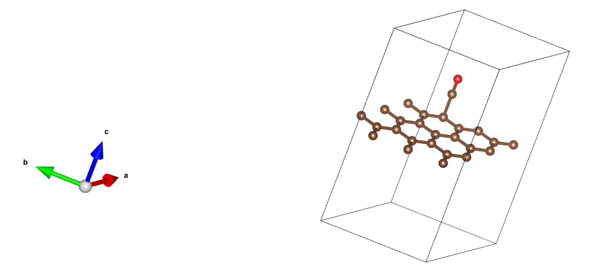

ABACUS+Phonopy 计算吉布斯自由能等热力学性质
作者：刘裕，邮箱：liuyu98@nudt.edu.cn
审核：陈默涵，邮箱：mohanchen@pku.edu.cn
最后更新时间：2025/12/11
一、介绍
吉布斯自由能是一个热力学函数，可以理解为在一个恒温、恒压的系统中，可用于做有用功（如发生化学反应或相变）的“自由”能量。其定义式为
其中 H 是焓（代表系统的总热力学能），T 是温度，S 是熵（代表系统的混乱度）。吉布斯自由能的变化（ΔG）是判断一个过程（如化学反应、相变）能否自发进行的决定性判据：
- ΔG < 0：过程能自发进行。
- ΔG = 0：系统处于平衡状态。
- ΔG > 0：过程不能自发进行。
在基于第一性原理的框架下，我们无法直接计算吉布斯自由能 G，而是通过声子谱计算来获取其关键的与温度相关的部分。对于一个固态晶体体系，在忽略体积变化（或压强极小）的近似下，其吉布斯自由能主要由以下几部分的贡献叠加而成：
静态总能量（）：
- 来源：这是通过密度泛函理论在绝对零度下对晶体原胞进行结构优化后计算得到的总能量。它代表了原子核固定在平衡位置时，整个系统的电子能量（即基态能量）。
- 物理意义：这是吉布斯自由能在 0 K 时的主要部分，但不包含任何原子振动的影响。
零点振动能（）：
- 来源：根据量子力学，即使在 0 K，原子也在其平衡位置附近振动，这部分能量称为零点能。它通过声子态密度来计算：，其中是声子态密度。
- 物理意义：它是温度 T=0 K 时振动自由能的贡献，是系统固有的、无法消除的能量。
振动自由能（）：
- 来源：这是温度引入的核心贡献。它描述了在有限温度 T 下，原子热振动对自由能的贡献。其计算同样依赖于声子态密度：。
- 物理意义：随着温度升高，F_vib(T) 的绝对值会增大（因为 -TS 项变得更负），从而显著降低系统的总吉布斯自由能 G(T)。这是导致相变（例如从有序相变为无序相）的关键因素。
本教程旨在介绍采用 ABACUS（基于 3.10 LTS 版本）做密度泛函理论计算，并且结合 Phonopy 软件计算小分子的吉布斯自由能等热力学性质的流程。
首先推荐大家阅读以下文档中的详细说明：
ABACUS 官方文档：Phonopy - ABACUS documentation
Phonopy 相关文档：ABACUS & phonopy calculation — Phonopy v.2.19.1
二、准备算例
我们以一氧化碳（CO）分子为例来演示结合 ABACUS 和 Phonopy 计算吉布斯自由能等热力学性质。
1. 下载并安装 Phonopy
git clone https://github.com/phonopy/phonopy.git
cd phonopy
python3 setup.py install
2. 下载 CO 分子算例
可以从 Gitee 上下载。可以在网页右侧点击 克隆/下载->下载 ZIP 得到算例，或者在 Linux 终端执行如下命令得到算例：
git clone https://gitee.com/mcresearch/abacus-user-guide.git
下载后解压，之后进入 abacus-user-guide/examples/interface_Phonopy/2_CO 文件夹
三、准备流程
1. 使用 ABACUS 优化结构
这里我们给出一个已经优化好的 CO 分子结构
ABACUS 中的结构文件名为 STRU：
ATOMIC_SPECIES
C 12.0100 C.upf upf201
O 16.0000 O.upf upf201
NUMERICAL_ORBITAL
C_gga_8au_100Ry_2s2p1d.orb
O_gga_6au_100Ry_2s2p1d.orb
LATTICE_CONSTANT
1.8897270000
LATTICE_VECTORS
15.0000000000 0.0000000000 0.0000000000
0.0000000000 15.0000000000 0.0000000000
0.0000000000 0.0000000000 15.0000000000
ATOMIC_POSITIONS
Direct
C #label
0.0000 #magnetism
1 #number of atoms
0.0000000000 0.0000000000 0.0000000000
O #label
0.0000 #magnetism
1 #number of atoms
0.0000000000 0.0000000000 0.0759695593
2. 用 Phonopy 产生需要计算的超胞及相应微扰构型
这里我们使用有限位移方法计算声子谱，因此需要对晶格进行扩胞并对原子位置进行微扰。执行如下命令即可产生微扰结构：
phonopy -d --dim="1 1 1" --abacus
这一步 phonopy 软件会根据晶格对称性自动产生相应个数的微扰结构。由于结构对称性较强，因此这个例子只产生四个微扰结构：STRU-001、STRU-002、STRU-003、STRU-004。这里类似 K 点的对称性分析，结构对称性越强，所需的微扰结构就越少，对称性稍差的体系一般会产生多个微扰结构。
经验性设置：1）扩胞越大，计算结果越精确，但是计算量也会上升，一般来说扩的胞三个方向的 cell 长度均在 10-20 Å 是比较合适的；2）对于优化后的晶胞（复杂体系），原子位置可能不处于高对称点上，phonopy 可能计算存在一定的误差，可以使用 Matertial Studio 等软件把对称性加回去之后，再做上述步骤，这样能够得到准确的声子谱数据（保证计算出来的声子谱满足体系的对称性特征）。
3. 产生 FORCE_SET 文件
接下来运行 run_phonon.sh 可以批量提交任务以计算微扰构型的原子受力。
针对不同算例，在使用该脚本之前，需要调整参数！
#!/bin/bash
TOTAL_TASKS=4 # 总的任务数
TASKS_PER_BATCH=4 # 每次提交的任务数
TOTAL_BATCHES=$((TOTAL_TASKS / TASKS_PER_BATCH)) # 提交批次总数
WAIT_TIME=600 # s 不同批次之间的等待时间
files=($(ls | grep STRU-))
echo "generate KPT"
cat > KPT << EOF
K_POINTS
0
Gamma
1 1 1 0 0 0
EOF
echo "generate cal.sh"
cat > cal.sh << EOF
#!/bin/bash
#SBATCH -J ABACUS
#SBATCH -p cn-large
#SBATCH -N 1
#SBATCH --no-requeue
#SBATCH -A mhchen_cg2
#SBATCH --qos=mhchenq
#SBATCH -c 4
source /lustre3/mhchen_pkuhpc/mhchen_cls/ly/liuyu_source.sh
export OMP_NUM_THREADS=4
mpirun -np 1 abacus
EOF
for ((batch=1; batch<=TOTAL_BATCHES; batch++)); do
echo "---------------------------"
echo "Current batch: $batch"
echo "---------------------------"
for ((task=1; task<=TASKS_PER_BATCH; task++)); do
index=$((task -1 + (batch-1)*TASKS_PER_BATCH))
stru_file="${files[index]}"
mkdir job_$index
cd job_$index
echo "generate INPUT"
cat > INPUT << EOF
INPUT_PARAMETERS
#Parameters (1.General)
suffix phonon
calculation scf
symmetry 1
nspin 1
dft_functional pbe
stru_file ../$stru_file
kpoint_file ../KPT
#Parameters (2.Iteration)
ecutwfc 100
scf_thr 1e-9
scf_nmax 100
#Parameters (3.Basis)
basis_type lcao
ks_solver genelpa
gamma_only 1
#Parameters (4.Smearing)
smearing_method gaussian
smearing_sigma 0.001
#Parameters (5.Mixing)
mixing_type broyden
mixing_beta 0.4
cal_force 1
cal_stress 1
EOF
echo "submit job: $index"
sbatch ../cal.sh
cd ..
done
# wait WAIT_TIME if not the last batch
if [ $batch -lt $TOTAL_BATCHES ]; then
echo "wait ${WAIT_TIME} s..."
sleep $WAIT_TIME
fi
echo "---------------------------"
done
echo "All jobs submitted!"
echo "---------------------------"
算完之后用以下命令产生 FORCE_SET 文件：
phonopy -f job_*/OUT*/running_scf.log
即要指定所有微扰构型算完之后的 running_scf.log 文件位置。如果运行有错，需要首先检查是否所有构型都已正常结束，且其中有力输出（可以找 FORCE 关键字来确认）。
四、计算热力学性质
执行如下命令：
phonopy -p -t mesh.conf --abacus
mesh.conf 内容如下：
DIM = 1 1 1
MESH = 31 31 31
TMAX = 2000
TSTEP = 2
以上参数在 Phonopy 的线上文档中均有详细说明，这里再进行简单概述：
TMIN，TMAX：计算的温度区间，默认为 0 到 1000 K。TSTEP：计算温度的间隔，默认为 10 K。
这一步结束之后会有 mesh.yaml 和 thermal_properties.yaml 文件输出，其中 mesh.yaml 包含计算得到的不同 q 点的声子频率：
mesh: [ 31, 31, 31 ]
nqpoint: 2176
reciprocal_lattice:
- [ 0.03527846, 0.00000000, 0.00000000 ] # a*
- [ 0.00000000, 0.03527846, 0.00000000 ] # b*
- [ 0.00000000, 0.00000000, 0.03527846 ] # c*
natom: 2
lattice:
- [ 28.345904999999998, 0.000000000000000, 0.000000000000000 ] # a
- [ 0.000000000000000, 28.345904999999998, 0.000000000000000 ] # b
- [ 0.000000000000000, 0.000000000000000, 28.345904999999998 ] # c
points:
- symbol: C # 1
coordinates: [ 0.000000000000000, 0.000000000000000, 0.000000000000000 ]
mass: 12.010700
- symbol: O # 2
coordinates: [ 0.000000000000000, 0.000000000000000, 0.075969559300000 ]
mass: 15.999400
phonon:
- q-position: [ 0.0000000, 0.0000000, 0.0000000 ]
distance_from_gamma: 0.000000000
weight: 1
band:
- # 1
frequency: -0.9211461680
- # 2
frequency: -0.9211461680
- # 3
frequency: -0.0001812093
- # 4
frequency: 0.0178447192
- # 5
frequency: 0.0178447192
- # 6
frequency: 63.4604461312
- q-position: [ 0.0322581, 0.0000000, 0.0000000 ]
distance_from_gamma: 0.001138015
weight: 4
band:
- # 1
frequency: -0.9211461680
- # 2
frequency: -0.9211461680
- # 3
frequency: -0.0001812093
- # 4
frequency: 0.0178447192
- # 5
frequency: 0.0178447192
- # 6
frequency: 63.4604461312
......
thermal_properties.yaml 包含计算得到的吉布斯自由能等热力学性质：
# Thermal properties / unit cell (natom)
unit:
temperature: K
free_energy: kJ/mol
entropy: J/K/mol
heat_capacity: J/K/mol
natom: 2
cutoff_frequency: 0.00000
num_modes: 178746
num_integrated_modes: 89373
zero_point_energy: 12.6684784
thermal_properties:
- temperature: 0.0000000
free_energy: 12.6684784
entropy: 0.0000000
heat_capacity: 0.0000000
energy: 12.6684784
- temperature: 2.0000000
free_energy: 12.6334037
entropy: nan
heat_capacity: 0.0000000
energy: nan
- temperature: 4.0000000
free_energy: 12.5589641
entropy: 42.2908524
heat_capacity: 0.0000000
energy: 12.7281275
- temperature: 6.0000000
free_energy: 12.4672066
entropy: 49.0156934
heat_capacity: 16.6007414
energy: 12.7613008
......
这份数据是含 2 个原子的单胞（natom=2）的 DFT 计算热性质结果，明确了各物理量单位（温度为 K，自由能为 kJ/mol，熵和热容为 J/K/mol），同时给出了基础参数：截止频率为 0.00000，振动模式数 178746，积分模式数 89373，零点能为 12.6684784 kJ/mol；核心部分是 4 个温度点（0、2、4、6 K）对应的热性质数据，包括各温度下的自由能、熵、热容和能量。
五、Selective Dynamics
对于表面吸附小分子体系的振动分析，我们一般只关心特定原子的振动，如此可以大幅减少自由度以及微扰构型的数量，从而降低计算量。
然而，ABACUS+phonopy 不完全支持 VASP 的 selective dynamics 功能，即在使用有限位移法求声子谱时，没办法固定原子，因此我们另辟蹊径：
- 从超胞中提取我们关心的那部分原子 A，作为
POSCAR，采用phonopy生成微扰构型 - 将微扰构型放回原来的超胞（即补上第 1 步除去的原子 B），进行 SCF 计算
- 输出文件只保留 A 信息，用
phonopy生成FORCE_SETS - 采用
phonopy计算声子谱和热力学性质
VASP 测试
为保证该方法的正确性，我们下面采用 VASP 自带的 selective dynamics，和上述方法进行比较
原始构型

石墨烯表面吸附 CO 分子，CO 分子是我们关心的部分（即 A），剩余的石墨烯为 B
提取 CO 分子


产生微扰构型
# setting.conf文件
CELL_FILENAME = A.vasp # 指定原始结构文件（即CO分子）
SYMMETRY = .FALSE. # 关闭对称性，和VASP的IBRION=5保持一致
DIM = 1 1 1 # 扩胞维度
DISPLACEMENT_DISTANCE = 0.015 # 位移步长，单位由phonopy_disp.yaml而定，vasp一般是angstrom
# 运行phonopy产生微扰构型
phonopy setting.conf -d
合并超胞
将 A 部分产生的微扰构型与 B 部分拼接成完整的 POSCAR
单点计算
- INCAR
#System Information
System = test
ISTART = 0
ICHARG = 2
ISPIN = 1
PREC = Accurate
#Electronic Relaxation
EDIFF = 1e-8
NELM = 100
ENCUT = 800
NBANDS = 48
#Smearing
ISMEAR = 0
SIGMA = 0.01
#Relaxation
IBRION = -1
#Parallel
NPAR = 8
KPAR = 1
#Output Information
LVTOT = .FALSE.
LCHARG = .FALSE.
LWAVE = .FALSE.
KPOINTS文件
K-Points
0
Gamma
5 5 1
0. 0. 0.
修改 vasprun.xml
<calculation>
...
<varray name="positions">
<v> 0.89091543 0.77777778 0.62000000 </v>
<v> 0.88888889 0.77777778 0.69800000 </v>
</varray>
</structure>
<varray name="forces">
<v> 0.03574063 -0.06670196 6.86791247 </v>
<v> -0.02486650 0.04439299 -1.09690829 </v>
</varray>
...
修改 vasprun.xml 的 <calculation> 部分的 <varray name="positions"> 和 <varray name="forces">，只保留 A 对应的原子位置和受力
生成 FORCES_SETS
phonopy -f job_*/vasprun.xml
计算声子谱和热力学性质
准备 mesh.conf 文件：
DIM = 1 1 1 # 扩胞维度
MESH = 31 31 31 # q网格维度
TMAX = 2000 # 最高温度
TSTEP = 2 # 温度步长
运行以下命令计算不同温度下的吉布斯自由能：
phonopy -t mesh.conf
结果
打开 mesh.yaml 文件：
phonon:
- q-position: [ 0.0000000, 0.0000000, 0.0000000 ]
distance_from_gamma: 0.000000000
weight: 1
band:
- # 1
frequency: -11.7479958862
- # 2
frequency: -11.7479958862
- # 3
frequency: -4.2797870860
- # 4
frequency: -1.2401920249
- # 5
frequency: -1.2401920249
- # 6
frequency: 55.2691032362
VASP 的 selective dynamics
- 结果
1 f = 55.267976 THz 347.258938 2PiTHz 1843.541257 cm-1 228.569882 meV
2 f/i= 1.235137 THz 7.760592 2PiTHz 41.199723 cm-1 5.108112 meV
3 f/i= 1.251895 THz 7.865885 2PiTHz 41.758707 cm-1 5.177418 meV
4 f/i= 4.281143 THz 26.899214 2PiTHz 142.803553 cm-1 17.705376 meV
5 f/i= 11.747473 THz 73.811549 2PiTHz 391.853516 cm-1 48.583622 meV
6 f/i= 11.748864 THz 73.820289 2PiTHz 391.899914 cm-1 48.589375 meV
可以看出，该方法流程可以跑通，并且计算结果与 VASP 自带的 selective dynamics 基本一致。
INCAR
#System Information
System = test
ISTART = 0
ICHARG = 2
ISPIN = 1
PREC = Accurate
#Electronic Relaxation
EDIFF = 1e-8
NELM = 100
ENCUT = 800
NBANDS = 48
#Smearing
ISMEAR = 0
SIGMA = 0.01
#Relaxation
IBRION = 5 # 只有IBRION = 5支持selective dynamics
POTIM = 0.015 # angstrom
NFREE = 2
#Parallel
NPAR = 8
KPAR = 1
#Output Information
LVTOT = .FALSE.
LCHARG = .FALSE.
LWAVE = .FALSE.
ABACUS 测试
针对相同构型，采用上述方法计算 selective dynamics 声子谱
前 5 个步骤和 VASP 软件相同
修改 OUT.*/running_scf.log 文件
- 修改原子数为 A 部分的原子数
TOTAL ATOM NUMBER = 2
- 修改#
TOTAL-FORCE (eV/Angstrom)#保留 A 的原子受力
#TOTAL-FORCE (eV/Angstrom)#
-------------------------------------------------------------------------
Atoms Force_x Force_y Force_z
-------------------------------------------------------------------------
C19 -0.0342525364 0.0545237746 7.8209390470
O1 0.0203199276 -0.0337892776 -2.0001402559
-------------------------------------------------------------------------
生成 FORCES_SETS
phonopy -f job_*/OUT*/running_scf.log
计算声子谱和热力学性质
准备 mesh.conf 文件：
DIM = 1 1 1 # 扩胞维度
MESH = 31 31 31 # q网格维度
TMAX = 2000 # 最高温度
TSTEP = 2 # 温度步长
运行以下命令计算不同温度下的吉布斯自由能：
phonopy -t mesh.conf
结果
- 采用 PW 基组
phonon:
- q-position: [ 0.0000000, 0.0000000, 0.0000000 ]
distance_from_gamma: 0.000000000
weight: 1
band:
- # 1
frequency: -9.9299040341
- # 2
frequency: -9.9299040341
- # 3
frequency: -0.6385463555
- # 4
frequency: 1.1070751324
- # 5
frequency: 1.1070751324
- # 6
frequency: 51.8620917159
- 采用 LCAO 基组
phonon:
- q-position: [ 0.0000000, 0.0000000, 0.0000000 ]
distance_from_gamma: 0.000000000
weight: 1
band:
- # 1
frequency: -9.5532883461
- # 2
frequency: -9.5532883461
- # 3
frequency: -0.6542805230
- # 4
frequency: 0.9895314628
- # 5
frequency: 0.9895314628
- # 6
frequency: 52.8367124288
- ABACUS 的 PW 和 LCAO 结果接近
- ABACUS 和 VASP 结果类似，但是由于赝势不同，针对相同的非收敛构型，计算结果略有差异可以理解
ABACUS 仓库在 tools/selective_dynamics 文件夹下已提供相应的处理脚本，可以直接完成上述步骤！
以上为本次教程，若有疑问欢迎联系！